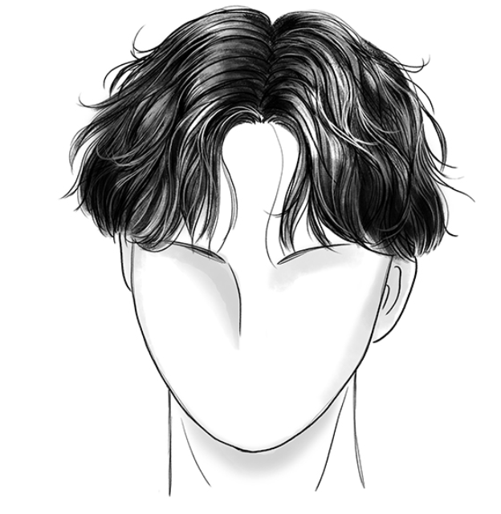
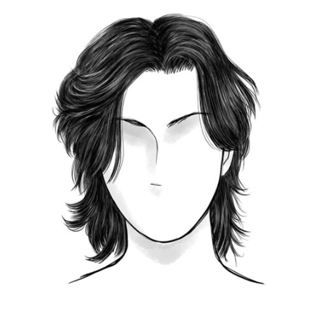
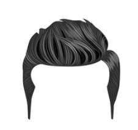
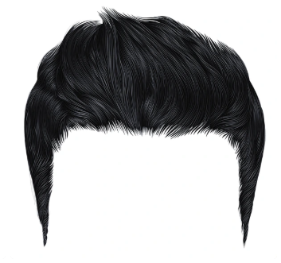
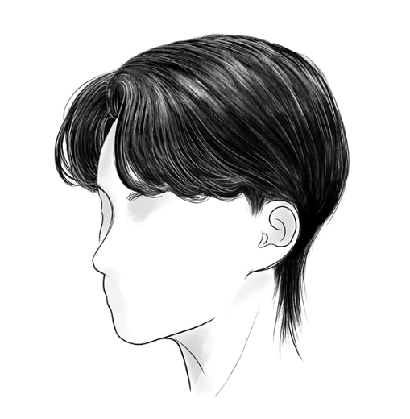

<!DOCTYPE html>
<html lang="en">
<head>
  <meta charset="UTF-8">
  <title>Simple Chatbot</title>
  <style>
    * {
      margin: 0;
      padding: 0;
      box-sizing: border-box;
      font-family: 'Segoe UI', sans-serif;
    }
    body {
      background-color: #f7f7f7;
    }
    header {
      background-color: #1b62b3;
      color: white;
      padding: 15px 30px;
      display: flex;
      justify-content: space-between;
      align-items: center;
    }
    .logo {
      font-size: 24px;
      font-weight: bold;
    }
    nav a {
      color: white;
      text-decoration: none;
      margin-left: 20px;
      font-weight: 500;
    }
    nav a:hover {
      color: whitesmoke;
    }
    .main-content {
      min-height: 80vh;
      display: flex;
      align-items: center;
      justify-content: center;
      background: #fff;
      padding: 40px 10px;
    }
    .content-wrapper {
      display: flex;
      flex-direction: row;
      align-items: center;
      gap: 40px;
      background-color: white;
      padding: 40px;
      border-radius: 10px;
      box-shadow: 0 4px 10px rgba(0,0,0,0.08);
      max-width: 1100px;
      width: 100%;
    }
    .content-text {
      max-width: 400px;
      text-align: left;
    }
    .content-text h1 {
      font-size: 2.2rem;
      margin-bottom: 20px;
      line-height: 1.1;
    }
    .content-text p {
      font-size: 1.1rem;
      margin-bottom: 30px;
    }
    .content-image img {
      max-width: 450px;
      width: 100%;
      border-radius: 10px;
      box-shadow: 0 4px 10px rgba(0,0,0,0.15);
    }
    .btn {
      display: inline-block;
      padding: 12px 25px;
      background-color: #1338be;
      color: white;
      text-decoration: none;
      border-radius: 5px;
      font-weight: bold;
    }
    .btn:hover {
      background-color: #1338be;
    }
    @media (max-width: 900px) {
      .content-wrapper {
        flex-direction: column;
        padding: 20px;
        gap: 24px;
      }
      .content-image img {
        max-width: 100%;
      }
      .content-text {
        text-align: center;
        max-width: 100%;
      }
      .content-text h1 {
        font-size: 1.5rem;
      }
    }
    footer {
      background-color: #1b62b3;
      color: white;
      text-align: center;
      padding: 15px 0;
      font-size: 14px;
    }
  </style>
</head>
<body style="background-image: url('chatbot.png'); background-size: cover; background-repeat: no-repeat;"></body>
  <div class="chat-container">
    <h2>Pablings Barbershop</h2>
    <div id="chatbox"></div>
    <input id="userInput" type="text" placeholder="Type hi or hello to start..." />
    <button onclick="talk()">Send</button>
  </div>

  <script>
    function talk() {
      const input = document.getElementById("userInput").value.trim().toLowerCase();
      if (!input) return;

      let response = "I don't understand.";

      if (input.includes("hello")) {
        response = "Hi there! I am Mr. Pabs, your virtual assistant. To know more about Pablings Barbershop, type: about, haircuts or service.";
      } else if (input.includes("hi")) {
        response = "Hello there! I am Mr. Pabs, your virtual assistant. To know more about Pablings Barbershop, type: about, haircuts or service.";
      } else if (input.includes("about")) {

        //Haircut

        response = "Pablings Barbershop is a well-known barbershop nationwide for its excellence in haircut and hairstyle services. The store is located in Masinag, Antipolo City and it opens from 9:00am to 5:00pm everyday.";
      } else if (input.includes("haircuts")) {
        response = "Pablings Babrbershop offers creative cut. Here are the haircuts offered under the creative cut category: Curtain, Wolf, Pompadour, Edgar, and Mullet. ";
      } else if (input.includes("curtain")) {
        response = `The curtain cut is a hairstyle characterized by long, side-swept bangs that fall on either side of the face, creating a soft, curtain-like effect. Suitable for people with various hair type lengths and face shape.<br>
        `;
      } else if (input.includes("wolf")) {
        response = `The wolf cut is a hairstyle characterized by short, choppy layers on top and longer layers that fall to the sides and back that creates a wild, voluminous, and effortless vibe. Particularly well-suited for men with oval, square, and heart-shaped faces. <br>
        `;
      } else if (input.includes("pompadour")) {
        response = `The pompadour cut also known as curtain bangs, can be a versatile hairstyle for men and are generally suitable for many face shapes, particularly those with square, diamond, heart, or oval faces. <br>
        `;
      } else if (input.includes("edgar")) {
        response = `The Edgar haircut, known for its blunt fringe and bowl-like shape, is often best suited for men with angular or narrow faces and those with pronounced features.  <br>
        `;
      } else if (input.includes("mullet")) {
        response = `A mullet haircut can be a stylish option for men of various face shapes, the length of the hair at the back can also help to elongate and balance out rounder face shapes.<br>
        `;

        //services
      } else if (input.includes("services")) {
        response = "Here are the following services offered by Pablings Barbershop: Tabas Pablings, Pablings Espesyal, Ginoong Pabian #1, Ginoong Pabian #2, and Pablito Gwapito. ";
      } else if (input.includes("tabas pablings")) {
        response = "The Tabas Pablings is a regular haircut that is generally suitable for various face shape and hair lengths.";
      } else if (input.includes("pablings espesyal")) {
        response = "Pablings Espesyal is a service that offers a regular haircut and shampoo.";
      } else if (input.includes("tabas pablings")) {
        response = "The Tabas Pablings is a regular haircut that is generally suitable for various face shape and hair lengths.";
      } else if (input.includes("ginoong pabian #1")) {
        response = "The Ginoong Pabian #1 is a service that offers a combination of regular haircut and styling a person's hair, including shaving or trimming facial hair.";
      } else if (input.includes("ginoong pabian #2")) {
        response = "The Ginoong Pabian #2 is a service that offers a combination of regular haircut and styling a person's hair, and a half body massage including the back, neck, and shoulders.";
      } else if (input.includes("pablito gwapito")) {
        response = "The Pablito Gwapito is a service that offers a combination of regular haircut and styling a person's hair, and a charcoal face mask.";
      }

      const chatbox = document.getElementById("chatbox");
      chatbox.innerHTML += `<p class="user"><strong>You:</strong> ${input}</p>`;
      chatbox.innerHTML += `<p class="mrpabs"><strong>Mr. Pabs:</strong> ${response}</p>`;
      document.getElementById("userInput").value = "";
      chatbox.scrollTop = chatbox.scrollHeight;
    }
  </script>
</body>
</html>